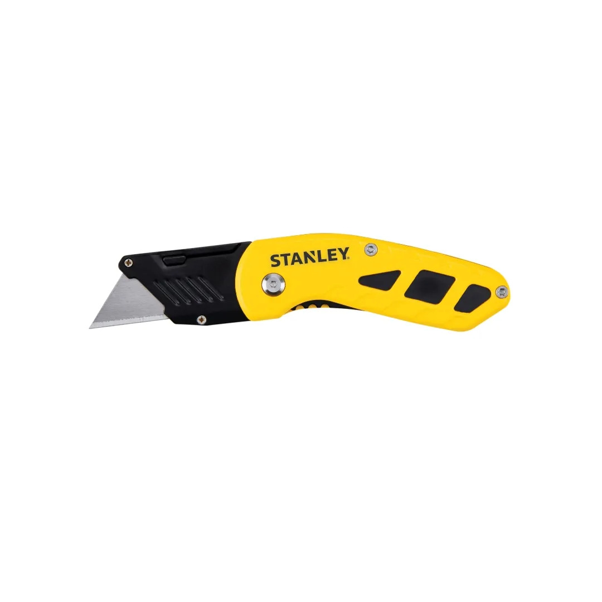
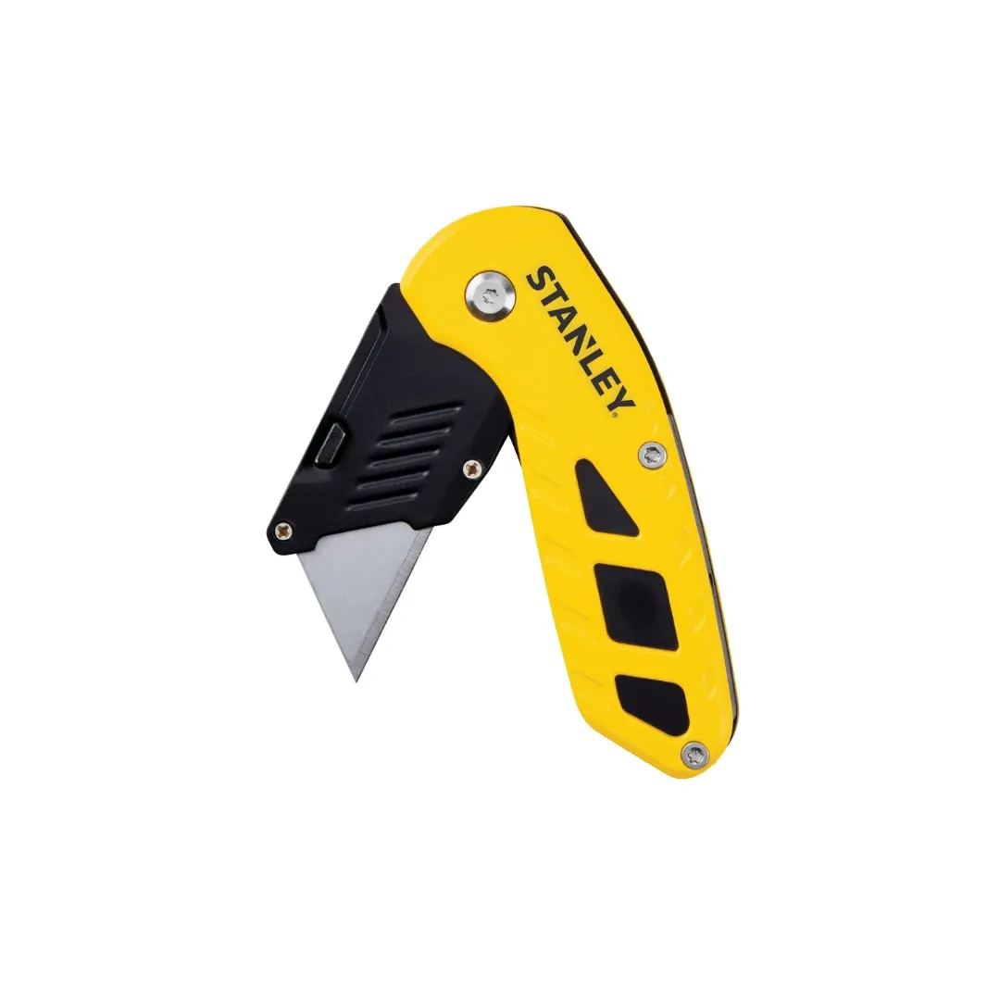
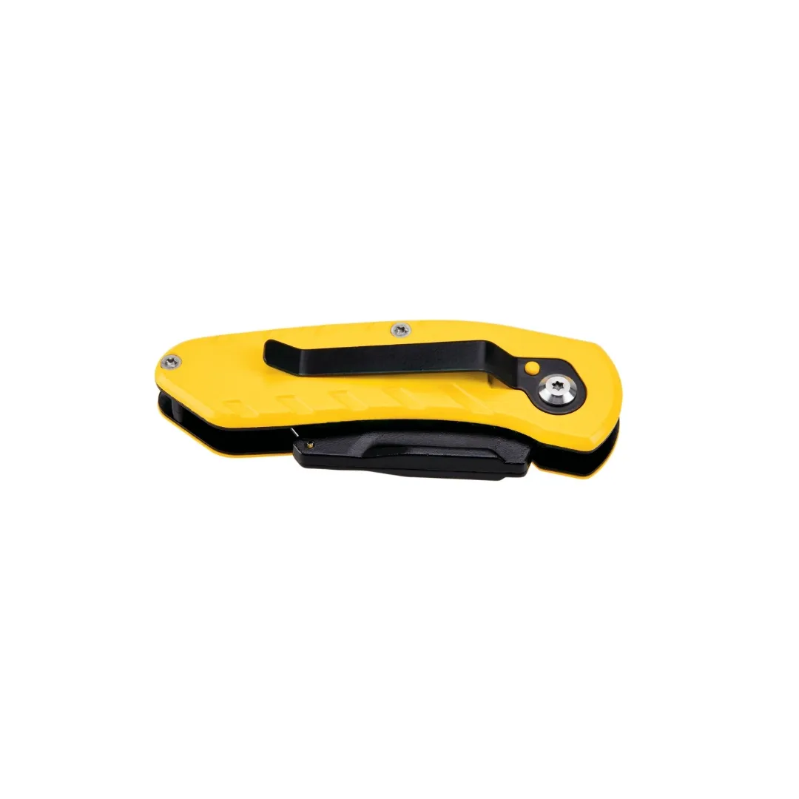
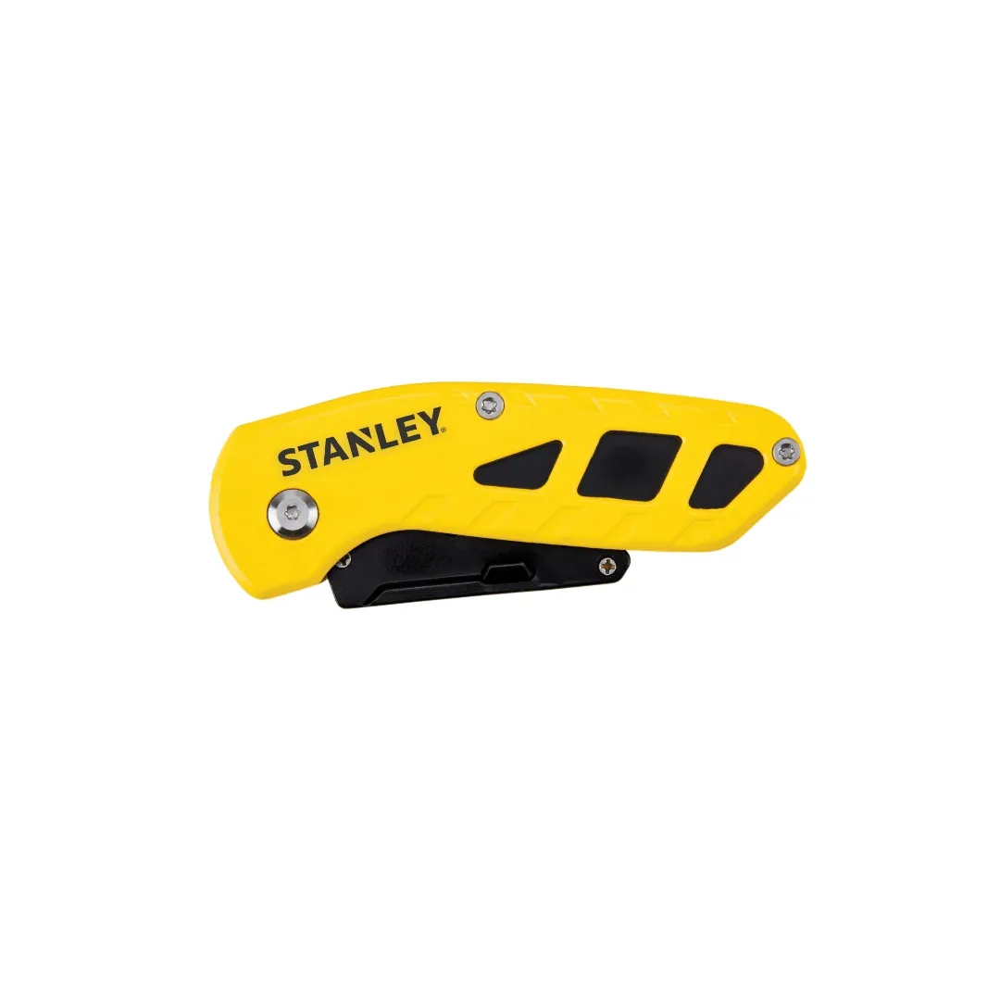
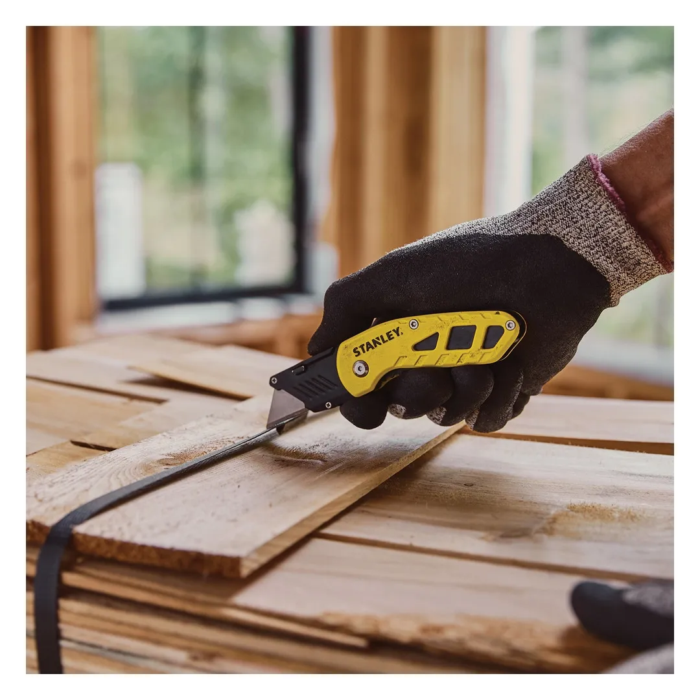

STHT10424-0





The STANLEY Folding Fixed Blade Utility Knife is the perfect combination of convenience, safety, and durability. With its unique corrosion-resistant folding mechanism, this knife folds away easily, making it compact enough to fit in pockets or pouches when not in use. Whether you’re working on a job site or handling DIY tasks, this utility knife provides quick blade changes and comfort throughout extended cutting sessions.
Key Features
Designed for professionals and DIY enthusiasts, this knife is compact, ergonomic, and built to last. With its folding mechanism, quick blade changes, and comfortable grip, the STANLEY Folding Fixed Blade Utility Knife offers safety, convenience, and reliability in one easy-to-use tool.
| Rating | Industrial |
| Type | Folding |
| Body Material | Aluminium |